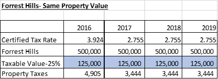
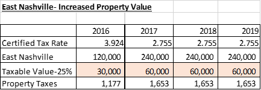

Conversation About Property Taxes Part II- Understanding the Imbalance
There are two factors that affect the property tax that a resident pays. The first component is the value of the property and the second component is the tax rate. If your property value goes up and the tax rate goes up, your taxes will be high. If your property value goes down and the tax rate goes down, your taxes will go down. However, while residents may know if the value of their house is going up or down, they have no way of knowing the tax rate because the rate is determined on a county wide basis.
What is “Certified Tax Rate (CTR) or “Truth in Taxation?
The Tennessee Certified Tax Rate process is designed to ensure “truth-in-taxation” following a county-wide reappraisal. The process ensures the amount of total taxes collected for a county remain the same after a reappraisal, even if the combined value of all property in the county goes up. As a way to deter cities/counties from having revenues from reappraisals, the state law requires that the certified tax rate be adjusted to produce the same revenue as the prior year (the year before appraisal). This means if Metro raised $50,000 in property taxes on existing properties before reappraisal, then, it can only raise the same amount the following year after a re-appraisal.
Illustration:–Simplified
Assuming in Yr 1, Total appraised taxable value of all homes in the county is $200,000 and the certified tax rate is 0.25 , the total property taxes revenue for the county will be 200000 x 0.25= $50,000
If total appraised taxable value of existing homes in Yr 2 increase to $250,000, the state prohibits the city/county from having the additional revenue from that appraisal. Instead the rate must be adjusted to produce the same revenue as before. In this case instead of a revenue of $62,500 (250,000 x 0.25), the rate will have to be adjusted down to 0.20 to yield the same revenue.
Therefore Yr 2 revenue will be 250000 x 0.20 = $50000
- Note the reduction in Certified Tax Rate from .25 to .20
- The CTR is calculated on a county wide basis
- This rule only applies to existing properties. Revenues will be added each year for new properties
- NOTE: The taxable value of a residential property is 25% of the appraised value while commercial properties are taxed on 40% of appraised value
What Does This Mean for Residents?
For the last couple of years in Davidson County, here is what has been happening:
If your property value goes down or remain the same, your property taxes will be reduced because of the reduced tax rate. However, even with a reduced overall tax rate in the county, if your property value goes up, you may see an increase in your taxes.
For Metro Davidson County the certified tax rate in 2016 was 3.924. However after the 2017 appraisal year, the certified tax rate was reduced to 2.755 due to the growth in Nashville, which created increased property tax values for the county. The rate will remain 2.755 until the next appraisal, unless a vote is taken to increase it.
Also, during the last reappraisal in 2017, homes close to downtown saw an increase in their property values because of the surge in growth while the values of homes in the suburbs remained the same. So for example A $120K home in east Nashville in Yr 1 is now $240K in Yr 2, while a $500K home in Forest Hills remains the same.
When the county’s total appraised value went up, the CTR was reduced. Therefore for individuals in Forrest Hills where the property values remain the same, their tax bill went down because of the reduced CTR. On the other hand, individuals close to downtown where there is increased development paid more taxes. The CTR was down but they did not see the effect because their appraised property values went up.


Another thing that adds to the complication is that most of the districts with increased property values are taxed as Urban Service District because they receive metro services (garbage etc) while most of the suburbs are on a General service rate. The CTR for the Urban Service District is also higher than that of the General service district. Some cities like Bellemeade and Goodlettsville has additional city rates
This means that for the last couple of years in Davidson County we have been facing an imbalance in property taxes. Individuals with lower property values have been disadvantaged and having been paying more than others, because of where they live and some due to gentrification. We need to address this situation head- on and work to correct this inequity.
How to Correct the Imbalance
The only way to adjust Certified tax rate up is by vote of the council.
Unless the council votes to increase the rate, the county will be limited to the same revenues and that will not help. Some of our residents, especially those that can afford to pay more will continue to pay less taxes while those with limited income will continue to pay more because of their locations.
For more information on the Certified Tax Rate, check out
As always, I welcome your comments, questions and suggestions.
The conversation about property taxes cannot be limited to one blog. I intend to have multiple post including one compiling answers to your questions. I also plan to attend community meetings and forums to keep the conversation going. The hallmark of being your representative is seeking residents input and I intend to do that throughout this process.